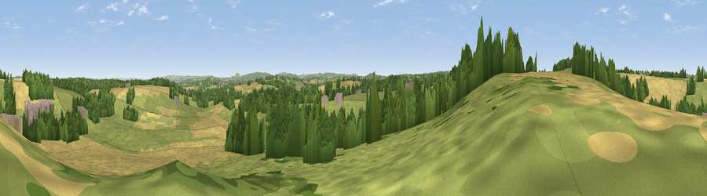

Viewpoint near Great Elm
#28312 in England · top 52% of its area beats it · near Great ElmThe view, rendered

A 360° render of this exact spot computed from the terrain model, tree cover and land cover — summer colours, afternoon light, calibrated against photographs of famous viewpoints. Real trees, hedges and buildings will differ in detail.
The panorama
Grey silhouette: terrain skyline in each direction (720 bearings, Earth curvature and refraction included). Dashed green: skyline with trees (+15 m) and buildings (+8 m) as obstacles. Blue strip: how far the ground is visible on each bearing.
Where the view opens
Wedge length = distance to the farthest visible ground on that bearing (vegetation-aware). Rings at 10, 25 and 50 km.
What fills the view
48% grassland · 31% cropland · 19% woodland · 2% built-up
Angular shares of the visible panorama (visual magnitude), not map area. Landscape diversity 0.48 (0–1 Shannon).
Key numbers
More beautiful places nearby
The staircase of upgrades: each row has a higher view potential than everything closer. Driving times are estimates from straight-line distance, calibrated against real road routing — check an actual route before setting out.
| Place | Direction | Drive | Score |
|---|---|---|---|
| Viewpoint near Great Elm | WSW · 1 km | ~3 min | 50.6 |
| Viewpoint near Chapmanslade | ESE · 7 km | ~14 min | 55.4 |
| Postlebury Hill | S · 7 km | ~15 min | 62.7 |
| Viewpoint near East Cranmore | SW · 8 km | ~17 min | 69.2 |
| Cley Hill | ESE · 11 km | ~20 min | 76.8 |
| Viewpoint near Lamyatt | SSW · 16 km | ~29 min | 77.8 |
| Beacon Batch | WNW · 27 km | ~43 min | 79.4 |
| Bleadon Hill [Loxton Hill] | W · 39 km | ~58 min | 79.6 |
51.25108, -2.36210 · source: screening · position refined by local search. Computed location — check access rights before visiting.